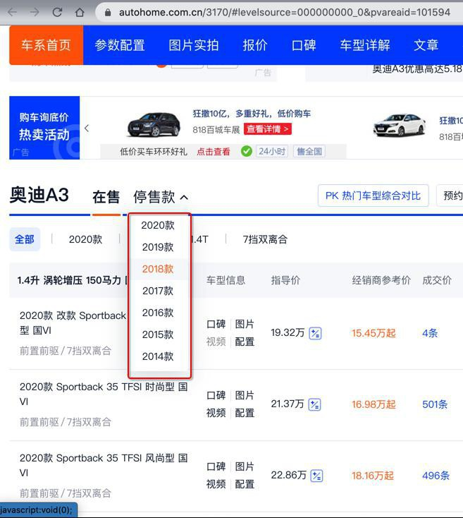

过程
本身汽车之家入口是
https://www.autohome.com.cn/car/
但是经研究，更利于爬虫抓取的是：
从：
https://www.autohome.com.cn/grade/carhtml/a.html
到：
https://www.autohome.com.cn/grade/carhtml/z.html
其中可以找到车系的数据：
对应的值分别是：
carBrandName：奥迪carBrandLogoUrl：https://car2.autoimg.cn/cardfs/series/g26/M0B/AE/B3/100x100_f40_autohomecar__wKgHEVs9u5WAV441AAAKdxZGE4U148.pngcarMerchantName：一汽-大众奥迪carMerchantUrl：https://car.autohome.com.cn/price/brand-33-9.html#pvareaid=2042363carSeriesName：奥迪A3carSeriesUrl：https://www.autohome.com.cn/3170/#levelsource=000000000_0&pvareaid=101594carSeriesMsrp：19.32-23.46万carSeriesMsrpUrl：https://www.autohome.com.cn/3170/price.html#pvareaid=101446
然后进去车系主页=车系详情页
https://www.autohome.com.cn/3170/#levelsource=000000000_0&pvareaid=101594
可以抓取到：
- 汽车品牌Logo图片
- 汽车主品牌=主机厂=（汽车）厂商
- 车系
- 厂商指导价
- 汽车级别
以及页面下方的，全部的车系的数据：
可以抓取到：
- carModelGroupName：1.5升 涡轮增压 169马力 国VI
- carModelYear：2020款
- carModelEmissionStandards：国VI
- carModelPower：1.5T
- carModelGearBox：7挡双离合
如果历史车型很多，分多个年份，则还要切换年份后再抓取：

之后，还要抓取每个车型的详细配置参数：
【奥迪Q2L e-tron 2019款 Q2L e-tron 纯电智酷型参数配置表】价格单奥迪汽车之家
https://car.autohome.com.cn/config/spec/42875.html#pvareaid=3454541
期间，有些内容的处理，还是很复杂的。
具体细节详见：
- 【未解决】用Python爬取汽车之家的车型车系详细数据
- 【已解决】Mac中恢复或重新搭建PySpider开发环境
- 【已解决】PySpider访问汽车之家报错：requests.exceptions.HTTPError HTTP 403 Forbidden
- 【已解决】PySpider中获取PyQuery获取到节点的子元素
- 【已解决】PySpider中PyQuery如何匹配某个元素中多个属性值
- 【已解决】汽车之家车型车系数据：支持新版车系页面
- 【已解决】汽车之家车型车系数据：支持旧版车系页面
- 【已解决】汽车之家车型车系数据：抓取车型的详细参数配置
- 【未解决】汽车之家车型车系数据：想办法破解js和css加密的文字显示
- 【已解决】汽车之家车型车系数据：解决部分车型基本参数字段个数不一致问题
- 【已解决】汽车之家车型车系数据：优化去掉js加速抓取车型参数配置
- 【规避解决】汽车之家配置页面无法直接获取到文字数据
- 【已解决】汽车之家车型车系数据：carBrandId是空
- 【未解决】汽车之家车型车系数据：能源类型是空白的车型
- 【已解决】汽车之家车型车系数据：车身结构的值包含span标签
- 【未解决】汽车之家车型车系数据：有些参数字段的值包含span特殊标签
- 【已解决】汽车之家车型车系数据：抓取车型的详细参数配置
- 【已解决】车型车系数据缺失如红旗H5等部分车型数据